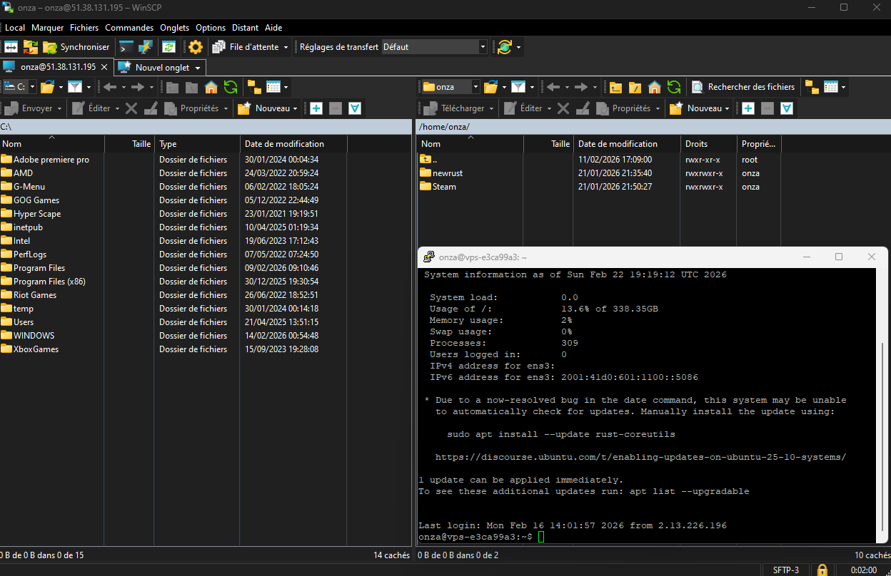

La création et la gestion d’un serveur Rust implique la mise en place d’une infrastructure dédiée et l’administration des fichiers du serveur. Pour ce projet, la machine hébergeant le serveur a été configurée et gérée à distance à l’aide de WinSCP, un client SFTP/FTP sécurisé.
sudo systemctl stop rust-modded-1 pour stopper le serveur, ou sudo systemctl start rust-modded-1 pour le relancer).Tout ce processus permet de déployer, configurer et maintenir un serveur Rust opérationnel tout en garantissant la sécurité, la stabilité et la possibilité d’une mise à jour rapide.